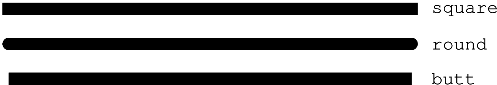
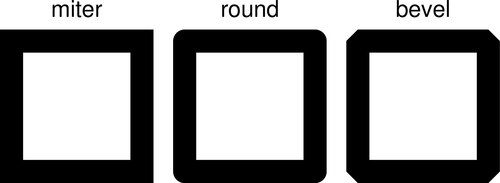

PS参数
本节列出所有与PS相关的参数，参数的默认值在中括号内列出。
- PS_CHAR_ENCODING
设置文本字符集编码方式 [ISOLatin1+]
GMT使用的字符集编码方式。可选值包括：
Standard
Standard+
ISOLatin1
ISOLatin1+
ISO-8859-x（x取值为1-10或13-15）
若安装GMT时使用SI单位制，则默认值为 ISOLatin1+ 编码；否则使用 Standard+ 编码。
备注
字符集信息是写在PS文件头中的，因而若需要临时修改字符集，则需要使用 --PS_CHAR_ENCODING==encoding 临时修改字符集，而不能使用 gmt set 修改。
- PS_COLOR_MODEL
生成PS代码时颜色所使用的色彩模型 [rgb]
可以取RGB、HSV、CMYK或GRAY。若设置为HSV，其不会影响绘图过程中使用RGB指定的颜色；若设置为GRAY，则所有的颜色都将使用YIQ方法转换成灰度。
- PS_COMMENTS
生成的PS代码中是否包含注释信息 [false]
若为 true，则生成的PS文件中会包含注释，用于解释文件中操作的逻辑，当你需要手动编辑PS文件时比较有用。默认情况下，其值为 false，即PS文件中不会包含注释，此时生成的PS文件更小。
- PS_CONVERT
现在模式下在执行
gmt end命令时GMT会自动调用 psconvert 生成用户指定格式的图片。该选项用于控制调用 psconvert 时的默认参数，多个参数之间以逗号分隔 [A]- PS_IMAGE_COMPRESS
设置PS中的图像压缩算法 [deflate,5]
可以取值为：
rle：Run-Length Encoding scheme
lzw：Lempel-Ziv-Welch compression
deflate[,level]：DEFLATE 压缩，level 可以取1到9
none：不压缩，相当于 deflate,5
- PS_LINE_CAP
控制线段的端点的绘制方式 [butt]
可以取如下值：
butt：不对端点做特殊处理，即端点是矩形（默认值）
round：端点处为直径与线宽相等的半圆弧
square：端点处为边长与线宽相等的半个正方形
下图展示了该参数取不同值时线段端点的区别。需要注意，图中三条线段的长度是相同的，但因参数设置不同而导致线段看上去长度不同。
 PS_LINE_CAP 控制线段端点绘图效果
- PS_LINE_JOIN
控制线段拐点的绘制方式 [miter]
可以取 miter、round、bevel。
下图展示了 PS_LINE_JOIN 取不同值时线段拐点的绘图效果。当线宽较小时，几乎看不出来区别，这里为了显示的效果，将线宽设置为 20p。
 PS_LINE_JOIN 控制线段拐点绘制效果
- PS_MITER_LIMIT
设置 PS_LINE_JOIN 取 miter 时拐点的角度阈值 [35]
当两个相交的线段之间的夹角小于该阈值时，则该拐角会被bevelled而不是被mitered。该参数的取值范围为0到180。若设置为0，则使用PS的默认值（11度），若设置为180，则所有拐角都会被beveled。
- PS_MEDIA
设置当前纸张的尺寸 [a4]
下表列出了GMT预定义的若干种纸张尺寸及其对应的宽度和高度（单位为points）。
GMT预定义纸张大小 Media
width
height
Media
width
height
A0
2380
3368
archA
648
864
A1
1684
2380
archB
864
1296
A2
1190
1684
archC
1296
1728
A3
842
1190
archD
1728
2592
A4
595
842
archE
2592
3456
A5
421
595
flsa
612
936
A6
297
421
halfletter
396
612
A7
210
297
statement
396
612
A8
148
210
note
540
720
A9
105
148
letter
612
792
A10
74
105
legal
612
1008
B0
2836
4008
11x17
792
1224
B1
2004
2836
tabloid
792
1224
B2
1418
2004
ledger
1224
792
B3
1002
1418
B4
709
1002
B5
501
709
用户还可以用 WxH 的格式完全自定义纸张尺寸，其中 W 和 H 分别为纸张的宽度和高度。比如 12cx12c 表示纸张为宽度和高度都为12厘米。
若某些尺寸经常使用，用户还可以自定义纸张格式，只需要新建或编辑
~/.gmt/gmt_custom_media.conf即可，文件格式也很简单:# 纸张格式名 宽度 高度 paper1 2000 3000 paper2 3000 0
纸张高度为0，表示纸张可以向上无限延展。
- PS_PAGE_COLOR
设置纸张的背景色 [white]
- PS_PAGE_ORIENTATION
设置纸张方向 [landscape]
备注
仅GMT经典模式下有效，现代模式下纸张始终是 portrait 模式。
可以取 portrait 或 landscape。
- PS_SCALE_X
绘图时X方向的全局比例 [1.0]
用于实现图像的整体缩放。
- PS_SCALE_Y
绘图时Y方向的全局比例 [1.0]
用于实现图像的整体缩放。
- PS_TRANSPARENCY
设置生成PS文件所使用的透明模式 [Normal]
可取值包括Color、ColorBurn、ColorDodge、Darken、Difference、Exclusion、HardLight、Hue、Lighten、Luminosity、Multiply、Normal、Overlay、Saturation、SoftLight、Screen
{kind=link}
{kind=link}